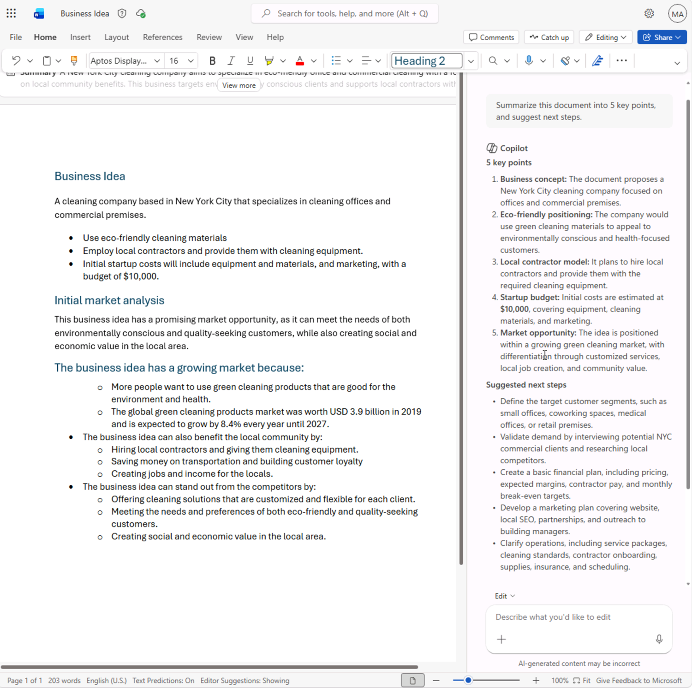
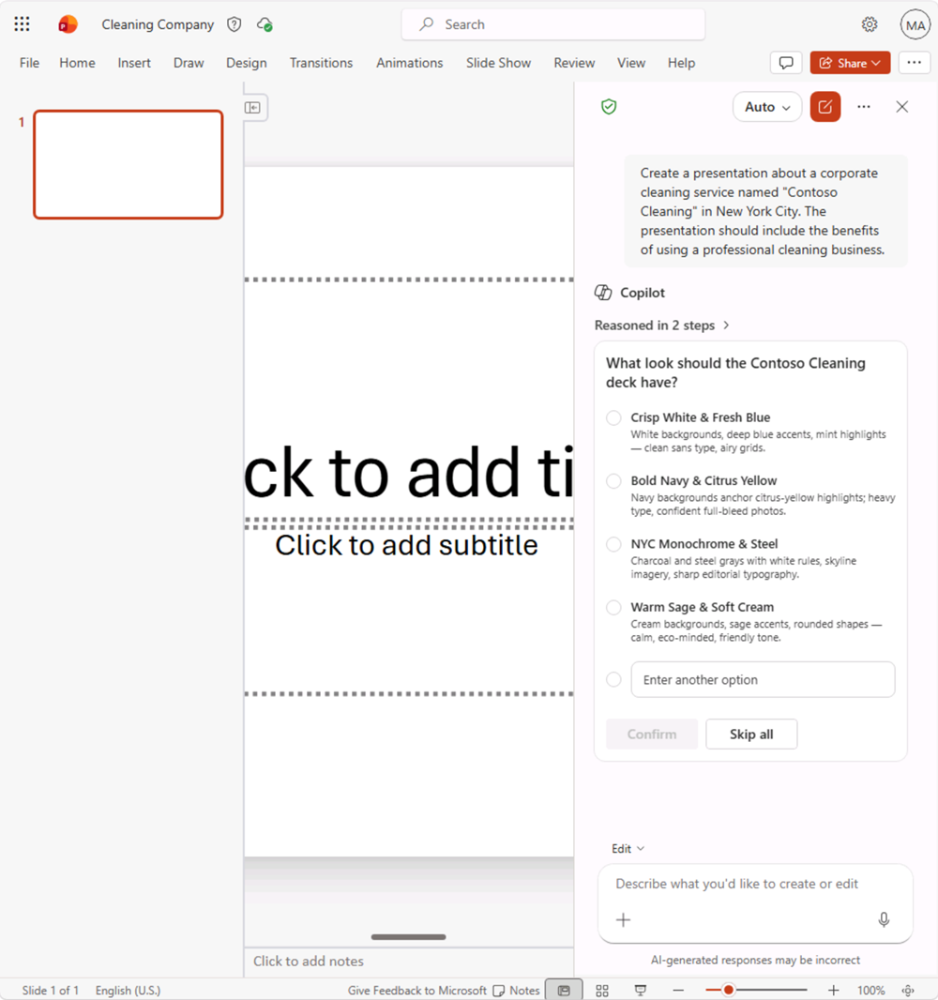
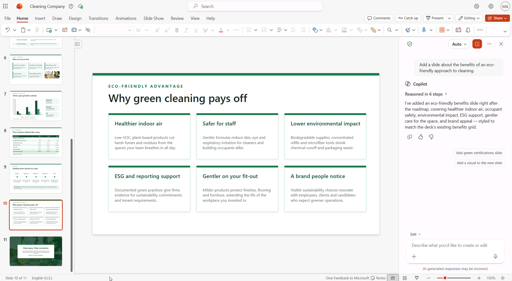

Welcome to the exciting world of Microsoft Copilot using the web-based Microsoft 365 applications!
In this exercise, you'll harness the power of Copilot to explore a new business idea: starting a corporate cleaning company using the web versions of Microsoft 365 applications.
Imagine this: you're about to launch a top-notch cleaning service that will revolutionize office spaces everywhere. With Microsoft Copilot by your side in the web applications, you'll research market opportunities, draft business plans, build financial projections, prepare presentation content, and organize a funding meeting.
Get ready to unleash your creativity and business acumen as you navigate through this engaging and interactive lab using Microsoft Copilot on the web. By the end of this exercise, you'll have a comprehensive set of business materials to help evaluate and pitch a new venture.
Important: This exercise provides prompts that you can use to work with Copilot in the web versions of Microsoft 365 apps. You should use these as a starting point for your exploration of ideas and content creation.
This exercise should take approximately 40 minutes to complete.
Note: This exercise requires a Microsoft 365 Copilot license and uses the web versions of Microsoft 365 applications.
Getting Started with Microsoft 365 Web Apps
Before beginning the lab exercises, you'll need to access Microsoft 365 through the web. Use one of these primary entry points:
- Main Portal: https://m365.cloud.microsoft/
- All Apps: https://m365.cloud.microsoft/apps/
You can also access individual applications directly using these links:
- OneDrive: https://onedrive.cloud.microsoft/
- Word: https://word.cloud.microsoft/
- Excel: https://excel.cloud.microsoft/
- PowerPoint: https://powerpoint.cloud.microsoft/
- Outlook: https://outlook.office.com/
Use Copilot to explore a document and research an idea
To start your exploration of generative AI, let's use Copilot for Word on the web to examine an existing document and extract some insights from it.
- In a web browser, open the document Business Idea.docx at
https://github.com/MicrosoftLearning/mslearn-copilot/raw/main/Allfiles/Business%20Idea.docx. - Download the file to your Downloads folder.
- Navigate to OneDrive on the web at
https://onedrive.cloud.microsoft/and select + Create or upload > Files upload. Select the Business Idea.docx file and upload it. - Open the Business Idea.docx document in Microsoft Word on the web. You can open the document directly from your OneDrive by selecting the document.
- Find and select the Copilot icon on the bottom right of Word to open the Copilot pane.
- Make sure the drop-down above the Copilot prompt box is set to Allow editing.
- In the Copilot pane, enter the following prompt:

Summarize this document into 5 key points, and suggest next steps.- Review the response from Copilot, which should summarize the main points in the document.

The specific response you receive may vary due to the nature of generative AI.
Hopefully, Copilot has provided some useful guidance. If you have additional questions, ask for more specific information.
- Return to the Copilot pane to ask Copilot this question:
How do I set up a new business in New York? Answer with a numbered list.- Review the response and follow up with additional questions as needed. When you're happy with the response, copy it to the clipboard. Paste it into the Word document after the existing text.
- Ask Copilot to rewrite the result as a table or add references. An example prompt might be:
Turn this into a table with columns for step, purpose, and key actions.
- Review the table and ask Copilot to add more information, such as a column with references for more details. Your response should look similar to the following:

Important: The AI-generated response is based on information publicly available on the web. While it may help you understand the steps required to set up a business, it is not guaranteed to be complete or legally accurate. Always confirm details with reputable sources before taking action.
When you're happy with the table that Copilot has generated, select Done to keep the changes.
Use Copilot to create content for a business plan
Now that you've done some initial research, let's have Copilot help you develop a business plan for your cleaning company using Word on the web.
- With the Business Idea.docx document still open in Word on the web, in the Copilot pane, enter the following prompt:
Can you suggest a name for my cleaning business?- Review the suggestions and select a name for your cleaning company (or continue prompting for more suggestions until you find a name you like).
- Create a new blank document by navigating to Microsoft Word on the web and selecting Create blank document. Then, in the Copilot pane, enter:
Write a business plan for "Contoso Cleaning" based on the information in /Business Idea.docx. Include an executive summary, market overview, and financial projections.
Tip: Type the prompt, and when you type / Copilot should allow you to browse the documents in your OneDrive, including Business Idea.docx. Alternatively, select + below the prompt box to attach the file.
- Generate and review the response. Continue working with Copilot until you're happy with the business plan. You can adjust the tone, change the length, or ask Copilot to rewrite sections as needed.

Visualize financial projections in Copilot for Excel
With a business plan in hand, let's take some of that data on financial projections and ask Copilot in Excel on the web to visualize that data for us so we can include it in emails or presentations.
- With the Business Plan document open in Microsoft Word on the web, open the Copilot pane.
- If the business plan already includes a table of projected profits or financial projections, copy the table to your clipboard. Otherwise, enter the following prompt:
Create a table of projected profits for the next 5 years, starting with this year. The profit this year should be $10,000 and it should increase by 12% each year.- Copy the table of projected profits to the clipboard.
- Open Microsoft Excel on the web and create a new blank workbook. Immediately save the workbook as Financial Projections.xlsx.
- Paste the table of profit projections into the Excel spreadsheet and format it as a table. To do this:
- Select a cell within your data.
- Select Home and choose Format as Table under Styles.
- Choose a style for your table.
- In the Format As Table dialog box, check My table has headers and select OK.
- With your sales projections formatted as a table, open the Copilot pane from the bottom right of Excel, confirm the drop-down above the Copilot prompt box is set to Allow editing, and enter the following prompt:
Suggest ways to visualize these financial projections.- Copilot should create a new sheet and add a chart to visualize the financial projections.

Tip: If Copilot suggests a different format for the data, enter the follow-on prompt Visualize the data as a line chart.
- Select the chart and then select the Chart tab to apply styles, change the chart type, and perform other actions. If Copilot created more than one chart, you can repeat this for each one. At the end, save your workbook.

Close the Excel web tab. Your workbook is saved automatically.
Use Copilot to create content for a presentation
With Copilot's help, you've created a draft of a business plan for the cleaning business idea and prepared some financial projections. Now you'll need an effective presentation to communicate the value of the opportunity.
- Open Microsoft PowerPoint for the web and create a new blank presentation. If the Designer pane opens automatically, you can close it.
- Rename the presentation to Cleaning Company.pptx in the title bar.
- Select the Copilot icon in the bottom right of the PowerPoint, and make sure the drop-down above the Copilot prompt box is set to Allow editing. Select Create presentation about topic.
Create a presentation about a corporate cleaning service named "Contoso Cleaning" in New York City. The presentation should include the benefits of using a professional cleaning business.Note: Replace Contoso Cleaning with the company name you chose earlier.
Tip: To help Copilot generate a presentation based on the work you completed earlier, you can optionally attach Business Plan.docx and Financial Projections.xlsx using the + control in the prompt box.
- Copilot may ask questions about the presentation, such as the visual style or look you want for the deck. You can respond with your preferences or select Skip all to let Copilot decide.

- Copilot will generate slides in the presentation. The process may take several minutes and your output should look something like this with a different theme:

- Select the second-last slide in the presentation. Then, in the Copilot pane, enter the following prompt:
Add a slide about the benefits of an eco-friendly approach to cleaning.
Close the PowerPoint web tab. The presentation is saved automatically to your OneDrive folder.
Use Copilot to arrange a funding meeting
You've created some collateral to help you get your business started. Now it's time to reach out to an investor seeking some startup funding using Outlook on the web.
- Open Microsoft Outlook on the web. Then, select the Copilot icon in the upper-right corner to open the Copilot pane.
- In the left navigation, select Calendar and change the view to Work week if it isn't already selected. If you don't already have any scheduled events in your calendar for this week, you can create one or review the schedule.
- In the Copilot pane, enter the following prompt:
What events do I have scheduled this week?Copilot should respond with a summary of your scheduled events for the week, helping you identify availability for a meeting with a bank manager to arrange startup funding.
- Switch to the Mail page, create a new email, and fill in the To box with your own email address.
- In the message body, select the Open Copilot icon to open the Copilot drafting experience.

- Enter the following prompt to generate a draft email:
Write an email to a bank manager requesting a meeting to discuss funding for a commercial cleaning business. The email should be concise and the tone should be professional.- Use Copilot to refine the email content, and then select Keep it to finalize the message.

You can send the email to yourself if you wish.
Challenge
Now you've seen how to use Microsoft Copilot in the web applications to research ideas and generate content. Why not try exploring further?
Based on what you've learned in this exercise, try using Copilot in the web versions of Microsoft 365 apps to plan a meeting in which you'll propose the adoption of generative AI in your organization.
- Research the benefits of generative AI and Microsoft Copilot for businesses, finding information about productivity benefits, cost-savings, and examples of organizations that have already succeeded.
- Create a discussion document using Word on the web that you can circulate as pre-reading before the meeting.
- Create a presentation using PowerPoint on the web that you can use to present your case, including data and visualizations to emphasize key elements of your pitch.
- Compose an email using Outlook on the web to tell your coworkers about the meeting and provide some context for it.
Be as inventive as you like, and explore how Copilot can help you by finding information, generating and refining text, creating images, and answering questions - all within the web-based Microsoft 365 ecosystem.
Conclusion
In this exercise, you've used Microsoft Copilot in the web versions of Microsoft 365 applications to find information, synthesize ideas, and create meaningful business content. By combining Copilot with the web versions of Word, Excel, PowerPoint, and Outlook, you've practiced a realistic flow for exploring a business concept and turning research into polished deliverables.